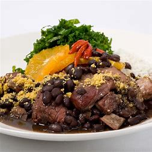
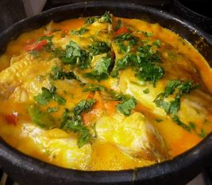

Restaurante Brasil
o verdadeiro sabor da terra
o verdadeiro sabor da terra
Explore nossos pratos típicos e bebidas deliciosas. Faça seu cadastro e aproveite ofertas exclusivas.
O restaurante Sabor Brasil nasceu da paixão pela culinária brasileira. Valorizamos ingredientes frescos o receitas autênticas que representam todas as regiões do Brasil.
Feijoada completa
Moqueca baiana
Escondidinho de carne seca
"Comida deliciosa e atendimento impecável. me senti em casa!"- João P.
"A melhor moqueca que já comi na minha vida. parabéns pelo capricho"- Maria S.
"O entregador é lindo! O escondinho é maravilhoso também"- Rafael A.